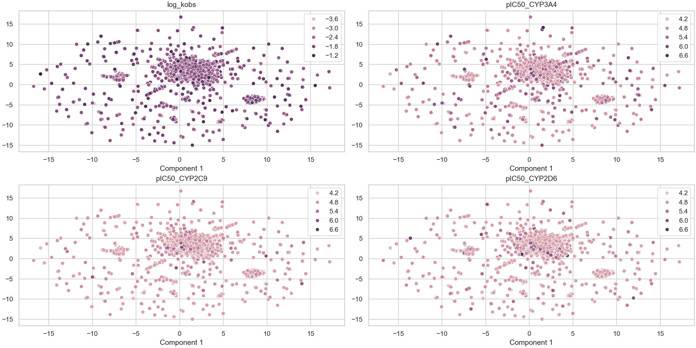
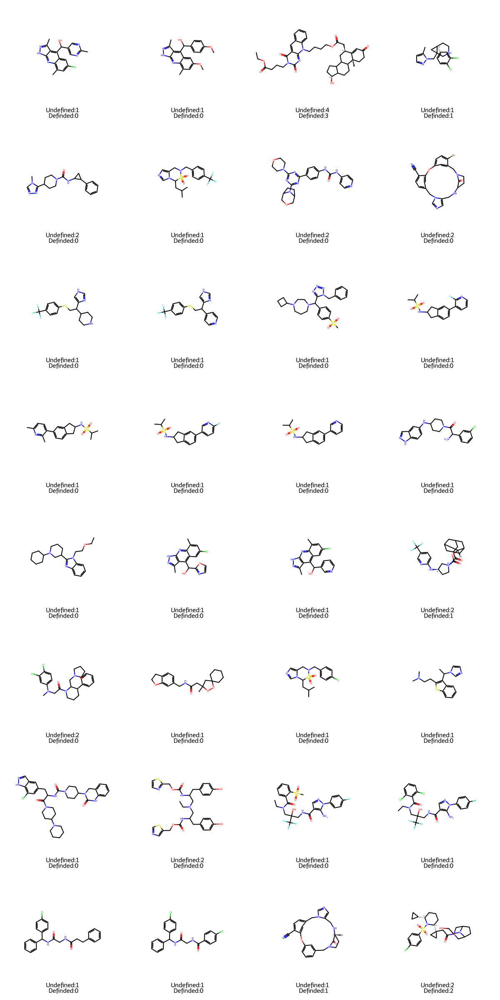
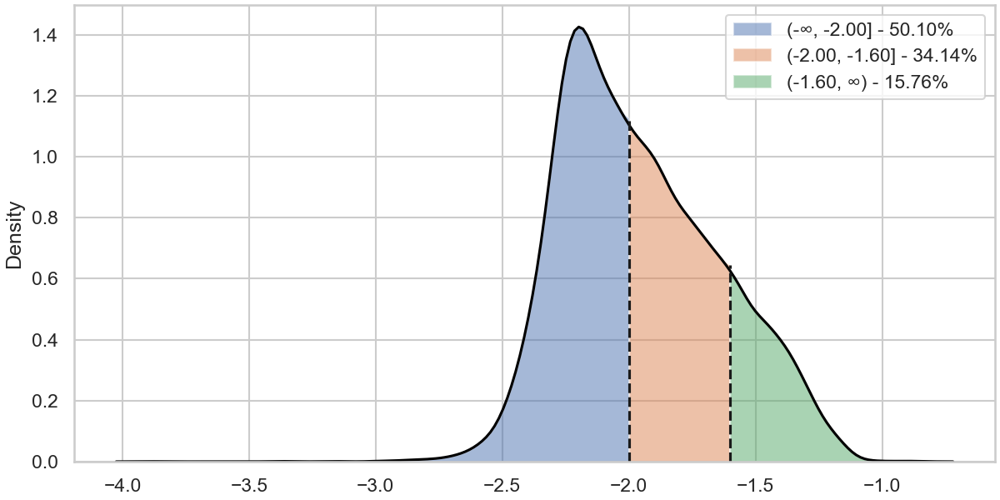
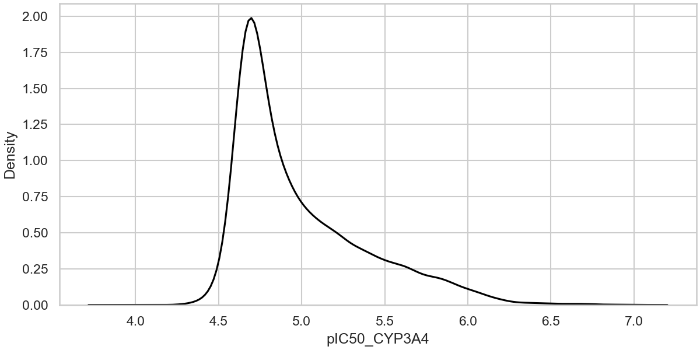
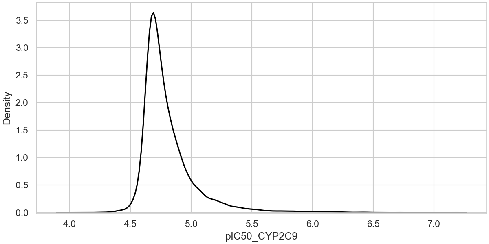
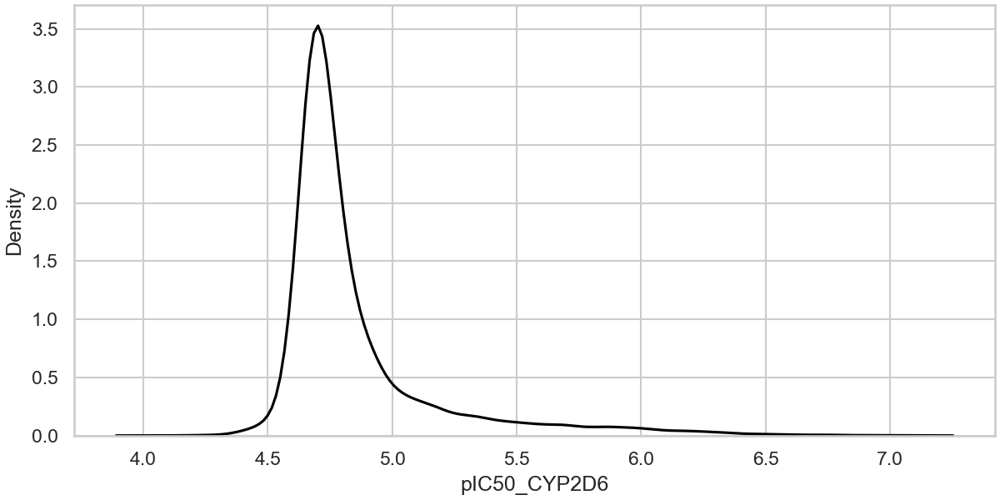
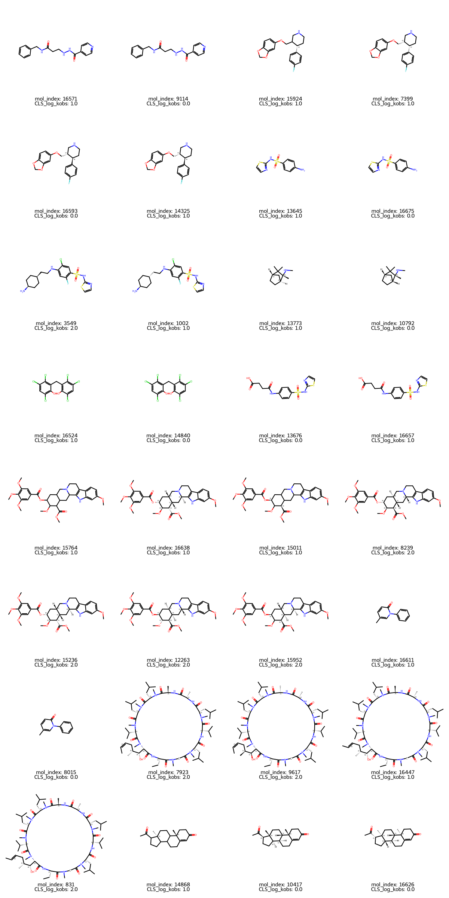
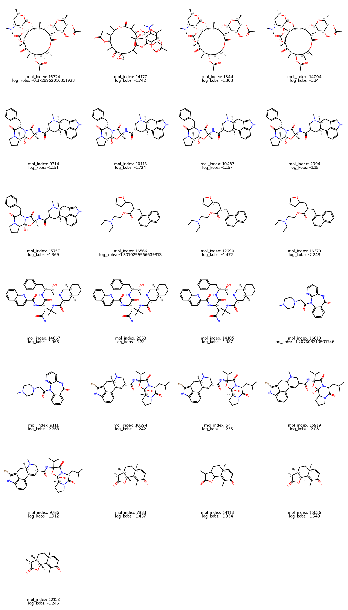

mol_curation
Logs
- New column added: MOL_smiles
- New column added: MOL_molhash_id
- New column added: MOL_molhash_id_no_stereo
- New column added: MOL_num_stereoisomers
- New column added: MOL_num_undefined_stereoisomers
- New column added: MOL_num_defined_stereo_center
- New column added: MOL_num_undefined_stereo_center
- New column added: MOL_num_stereo_center
- New column added: MOL_undefined_E_D
- New column added: MOL_undefined_E/Z
- Default `ecfp` fingerprint is used to visualize the chemical space.
- Molecules with undefined stereocenter detected: 2200.
Images
Distribution in Chemical Space - ECFP

Molecules with undefined stereocenters

There are 2200 molecules with undefined stereocenter(s). It's recommended to use and check the stereoisomers and activity cliffs in the dataset.
discretize
Logs
- New column added: CLS_log_kobs
Images
Data distribution - log_kobs

distribution
Images
Data distribution - pIC50_CYP3A4

Data distribution - pIC50_CYP2C9

Data distribution - pIC50_CYP2D6

ac_stereoisomer
Logs
- New column added: AC_CLS_log_kobs
- Found 519 activity cliffs among stereoisomers with respect to the CLS_log_kobs column.
- The molecule index are : 16571 ,9114 ,15924 ,7399 ,16593 ,14325 ,13645 ,16675 ,3549 ,1002 ,13773 ,10792 ,16524 ,14840 ,13676 ,16657 ,15764 ,16638 ,15011 ,8239 ,15236 ,12263 ,15952 ,16611 ,8015 ,7923 ,9617 ,16447 ,831 ,14868 ,10417 ,16626 ,15199 ,16259 ,12156 ,15266 ,15216 ,15242 ,9650 ,10436 ,14540 ,8288 ,13901 ,6458 ,14483 ,16651 ,14131 ,10485 ,10730 ,16468 ,11398 ,16542 ,16694 ,13880 ,15652 ,15679 ,8385 ,15288 ,8285 ,14308 ,16731 ,8583 ,10759 ,16492 ,10929 ,13937 ,15263 ,16491 ,13723 ,9936 ,16665 ,7152 ,7039 ,11524 ,16701 ,7755 ,8258 ,14810 ,15492 ,16642 ,10199 ,16432 ,15527 ,9165 ,16685 ,3000 ,8007 ,8122 ,15573 ,16625 ,11485 ,14623 ,13852 ,16465 ,10678 ,15717 ,9624 ,16724 ,14177 ,1344 ,14004 ,10166 ,10383 ,16448 ,8359 ,12176 ,14450 ,16624 ,14857 ,5887 ,16484 ,10876 ,341 ,340 ,16389 ,8742 ,16573 ,2871 ,13902 ,10857 ,14788 ,11476 ,16374 ,12292 ,16619 ,16027 ,16382 ,10102 ,8499 ,14099 ,8786 ,15301 ,8906 ,15251 ,16578 ,12172 ,8473 ,16623 ,13899 ,10941 ,16613 ,10514 ,16697 ,16551 ,15397 ,12274 ,16386 ,12178 ,12134 ,16401 ,14182 ,16444 ,8187 ,12106 ,16462 ,14780 ,9883 ,8534 ,3243 ,5318 ,2686 ,3959 ,3250 ,3616 ,3907 ,128 ,15954 ,14009 ,13818 ,16664 ,14680 ,11313 ,10635 ,15770 ,16585 ,4113 ,11725 ,12288 ,10401 ,16615 ,7754 ,15544 ,14396 ,8200 ,8101 ,14110 ,13874 ,16557 ,8667 ,12295 ,16707 ,7738 ,15238 ,15571 ,15601 ,9967 ,16602 ,9228 ,16575 ,16380 ,12265 ,11198 ,13713 ,11350 ,15894 ,13733 ,16541 ,12181 ,8419 ,817 ,16547 ,8060 ,14439 ,144 ,2781 ,8513 ,10540 ,5170 ,16519 ,16530 ,10317 ,5183 ,4967 ,555 ,16486 ,15662 ,15681 ,11374 ,13674 ,9314 ,10115 ,10487 ,2094 ,15757 ,13841 ,16730 ,10431 ,16521 ,14650 ,14850 ,10830 ,15551 ,15559 ,15966 ,16733 ,11011 ,16566 ,12290 ,16370 ,14878 ,15327 ,8616 ,7813 ,8827 ,9129 ,15311 ,16510 ,6690 ,13683 ,16662 ,11091 ,15988 ,13798 ,8059 ,7880 ,14836 ,12183 ,13996 ,14313 ,16096 ,11152 ,14662 ,3007 ,4644 ,16572 ,7436 ,14784 ,13741 ,16493 ,16597 ,9491 ,8297 ,9275 ,16588 ,15654 ,3791 ,16649 ,14147 ,6836 ,11510 ,14134 ,14867 ,2653 ,14105 ,16580 ,13969 ,14511 ,16590 ,16391 ,882 ,10180 ,14277 ,5898 ,16600 ,8796 ,16560 ,16644 ,10895 ,15910 ,12184 ,16610 ,9111 ,15316 ,9094 ,4616 ,5242 ,12152 ,16411 ,7475 ,16629 ,9471 ,14068 ,9239 ,15535 ,16434 ,16671 ,13765 ,14408 ,15324 ,16302 ,16000 ,16607 ,6226 ,16704 ,13618 ,15475 ,16405 ,7275 ,13642 ,16661 ,13986 ,16435 ,8733 ,13338 ,14077 ,12179 ,7668 ,16576 ,13709 ,8919 ,15788 ,11159 ,16700 ,15280 ,8191 ,12136 ,16614 ,10814 ,8632 ,16446 ,16303 ,16276 ,8496 ,16558 ,10147 ,15239 ,13772 ,16556 ,12126 ,7265 ,14713 ,16643 ,14634 ,3409 ,15568 ,16490 ,14941 ,15791 ,11332 ,8865 ,16517 ,16579 ,7077 ,16205 ,13822 ,13867 ,11296 ,1069 ,8615 ,13918 ,14835 ,16564 ,8032 ,3615 ,2825 ,14112 ,16060 ,11360 ,16605 ,207 ,8226 ,10380 ,11066 ,10476 ,13646 ,10061 ,16640 ,10393 ,13925 ,15793 ,6242 ,14424 ,15358 ,15699 ,16523 ,9252 ,16114 ,2372 ,16436 ,15671 ,7146 ,15916 ,16663 ,15522 ,11741 ,15695 ,10069 ,9160 ,2719 ,2282 ,13983 ,10022 ,16103 ,16650 ,10906 ,16004 ,10583 ,14575 ,11188 ,16400 ,16412 ,10208 ,11145 ,16540 ,10386 ,9890 ,8545 ,14073 ,10697 ,626 ,14797 ,10732 ,14638 ,11503 ,16395 ,12141 ,8011 ,10582 ,13715 ,16390 ,6658 ,11507 ,15588 ,15617 ,5062 ,1148 ,7452 ,16437 ,16439 ,13811 ,12264 ,10591 ,8760 ,15663 ,8986 ,16596 ,14049 ,15801 ,15625 ,16633 ,8980 ,1333 ,10643 ,13812 ,16396 ,16481 ,10114 ,7716 ,14360 ,16325 ,16636 ,13990 ,12099 ,16397 ,16475 ,11511 ,14811 ,13947 ,16373 ,10394 ,54 ,15919 ,9786 ,7833 ,14118 ,15636 ,12123 ,16180 ,8903 ,9128 ,16034 ,16598 ,12205 ,15006 ,13863 ,10955 ,16037 ,16543 ,10174
- New column added: AC_log_kobs
- Found 25 activity cliffs among stereoisomers with respect to the log_kobs column.
- The molecule index are : 16724 ,14177 ,1344 ,14004 ,9314 ,10115 ,10487 ,2094 ,15757 ,16566 ,12290 ,16370 ,14867 ,2653 ,14105 ,16610 ,9111 ,10394 ,54 ,15919 ,9786 ,7833 ,14118 ,15636 ,12123
Images
Activity shifts among stereoisomers - CLS_log_kobs

Activity shifts among stereoisomers - log_kobs
